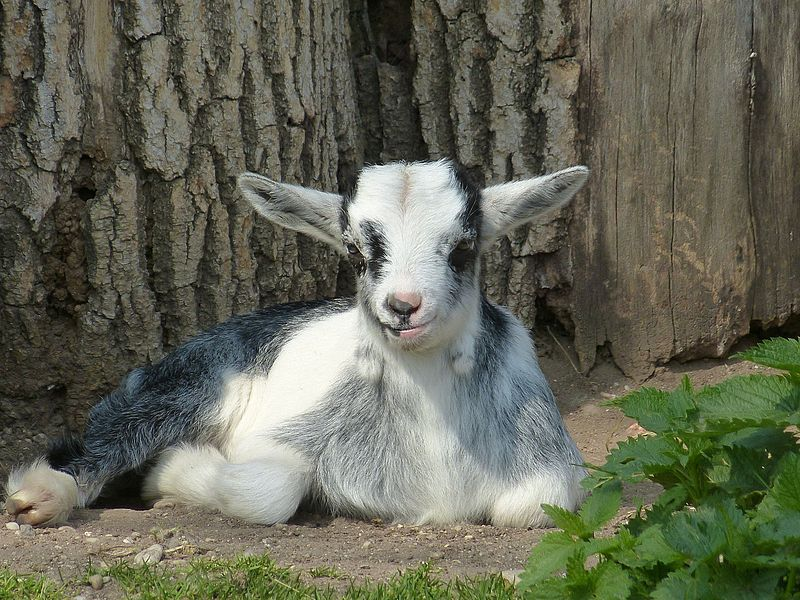
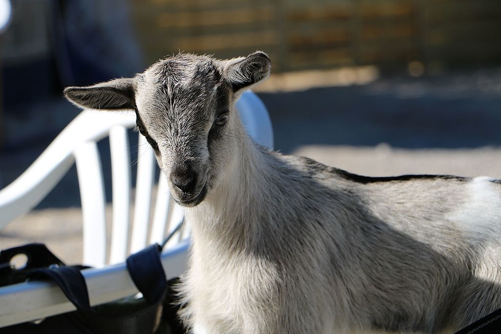
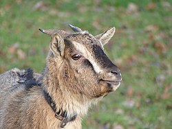

- Chèvre Naine
- Chèvre Kiko
La chèvre naine est de plus en plus présente dans les foyers comme animal de compagnie ou comme animal d'ornement.
Elle est aussi utilisée pour débroussailler des parcelles de terrains un peu difficiles.
Ainsi, elle se délectera des ronces, des plantes ligneuses, des arbustes, et même des orties lorsque celles-ci sont hautes et sèches.
De petite taille, son standard n'est encore pas actuellement véritablement défini en France.
Des éleveurs tentent d'établir des critères de sélection et de classements vis-à-vis de la morphologie, des couleurs et surtout des gabarits.
Cela permet d'éviter certains abus, notamment concernant la vente d'animaux non-nains (dits semi-nains jusqu'à une certaine taille) dépassant allègrement les 50 cm au garrot.
|  |  |  |
Le mot « kiko » a été utilisé traditionnellement en Nouvelle-Zélande par les Maoris pour décrire les animaux de boucherie.
La chèvre Kiko a été développée en Nouvelle-Zélande par la sélection des meilleures et des plus fertiles chèvres férales de ce pays au niveau de leur capacité de production de viande améliorée dans des conditions de pâturages naturels où le broutement arbustif est important.
Le taux de croissance est probablement la caractéristique qui définit le mieux la race Kiko.
Les chevreaux présentent une vigueur impressionnante. Elle est aussi très rustique.
La chèvre Kiko peut être maintenue sous des conditions d'élevage extensif dans les milieux ouverts broussailleux.
Elle n'est pas que présente en Nouvelle-Zélande, mais elle a aussi été introduite au Canada, dans la province de Québec.
Les boucs matures possèdent des cornes distinctives en spirale et de grande envergure.
Les oreilles de la Kiko sont placées assez hautes, de largeur moyenne et longueur modérée, non pendantes et non dressées.
Son museau est bien proportionné, ni convexe ni concave.
La densité de son pelage peut varier en fonction des conditions climatiques et il y a une variation marquée entre le pelage d’été et d’hiver.
La couleur prédominante de sa robe est le blanc, mais toute autre couleur est retrouvée.